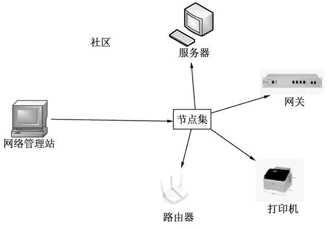
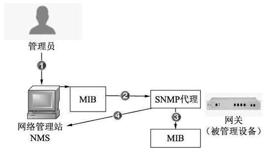
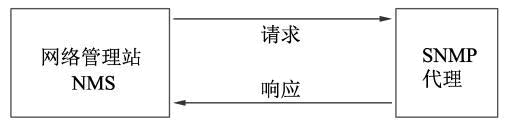
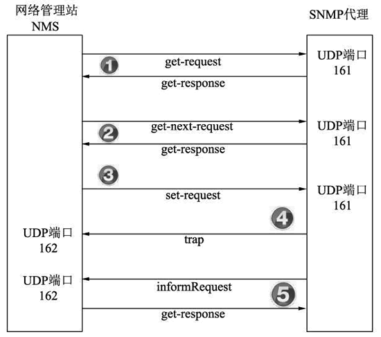

首页 > 编程笔记
SNMP协议是什么？
简单网络管理协议（Simple Network Management Protocol，SNMP）是由互联网工程任务组定义的一套网络管理协议。该协议是基于简单网关监视协议（Simple Gateway Monitor Protocol，SGMP）制定的。
SNMP 可以使网络管理员通过一台工作站完成对计算机、路由器和其他网络设备的远程管理和监视。利用 SNMP 协议可以更好地管理和监控网络。管理工作站可以远程管理所有支持该协议的网络设备，如监视网络状态、修改网络设备配置、接收网络事件警告等。
下面介绍 SNMP 协议的作用、构成、工作原理及通信方式等内容。
由于网络设备越来越多，网络规模越来越大，管理这些设备也越来越重要。远程管理网络的需求日益迫切，SNMP 应运而生。
SNMP 协议能够帮助网络管理员提高网络管理效率，及时发现和解决网络问题，对网络增长做好规划。网络管理员还可以通过 SNMP 协议，接收网络节点的通知消息和警告事件报告等，从而获知网络出现的问题。
SNMP 目前共有 3 个版本，分别为 v1、v2 和 v3，说明如下：
为了方便理解，下面先介绍这些信息的作用及含义。
上图所示的工作流程分为以下 4 个步骤：
常用的 6 种操作类型如图所示。
SNMP 可以使网络管理员通过一台工作站完成对计算机、路由器和其他网络设备的远程管理和监视。利用 SNMP 协议可以更好地管理和监控网络。管理工作站可以远程管理所有支持该协议的网络设备，如监视网络状态、修改网络设备配置、接收网络事件警告等。
下面介绍 SNMP 协议的作用、构成、工作原理及通信方式等内容。
SNMP 协议概述
前面介绍的 Telnet 协议可以用于连接远程计算机，并进行管理与控制，如远程执行命令。这种情况下，执行的命令有一定的局限性，如只能执行远程主机上支持的命令。由于网络设备越来越多，网络规模越来越大，管理这些设备也越来越重要。远程管理网络的需求日益迫切，SNMP 应运而生。
SNMP 协议能够帮助网络管理员提高网络管理效率，及时发现和解决网络问题，对网络增长做好规划。网络管理员还可以通过 SNMP 协议，接收网络节点的通知消息和警告事件报告等，从而获知网络出现的问题。
SNMP 目前共有 3 个版本，分别为 v1、v2 和 v3，说明如下：
- SNMP v1：是 SNMP 协议的最初版本，在 1988 年被制定，并被 Internet 体系结构委员会（IAB）采纳作为一个短期的网络管理解决方案。
- SNMP v2：是 1992 年发布的 SNMP 的第二个版本。它修订了第一版，并且在性能、安全、机密性和管理者之间通信等方面进行了大量改进。
- SNMP v3：是目前最新的版本。它是 2004 年制定的，协议编号为 RFC3411-RFC3418（STD0062）。它为提升协议的安全性，增加了认证和密文传输功能。
SNMP 架构组成
SNMP 的架构由 3 部分组成，分别为社区、网络管理站和节点，如图所示。

社区、网络管理站和节点说明如下：
- 社区：同一个管理框架下的网络管理站和所有节点的集合。
- 网络管理站：一个管理控制台，也称为网络管理系统（Network Management System，NMS）。它是一台带有必要 SNMP 管理软件的普通计算机，主要用来管理与监控网络上的设备。
- 节点：网络上的设备（被管理的设备）。例如，上图中的路由器、网关等都是节点设备。
工作原理
SNMP 可以用来发现、查询和监视网络中其他设备的状态信息。其工作流程如图所示。

上图中展现了管理员通过 NMS 获取网关监控数据的工作流程，其中涉及了一些 SNMP 协议的关键信息。为了方便理解，下面先介绍这些信息的作用及含义。
- MIB（管理信息库）：任何一个被管理的设备都表示成一个对象，并称为被管理的对象。而 MIB 就是被管理对象的集合。它定义了被管理对象的一系列属性，如对象的名称、对象的访问权限和对象的数据类型等。每个设备都有自己的 MIB。MIB 是一种树状数据库，MIB 管理的对象，就是树的端节点，每个节点都有唯一位置和唯一名字。
- SNMP 代理：是一种嵌入在被管理设备中的网络管理软件模块，主要用来控制本地机器的管理信息。它还负责将管理信息转换成 SNMP 兼容的格式，传递给 NMS。
上图所示的工作流程分为以下 4 个步骤：
- 当管理员查询被管理设备中的对象的相关值时，首先通过网络管理站 NMS 中的 MIB 找到相关对象。
- 网络管理站 NMS 向 SNMP 代理申请 MIB 中定义对象的相关值。
- SNMP 代理在自己的 MIB 库中进行查找。
- SNMP 代理将找到的对象相关值返回给网络管理站 NMS。
通信方式
SNMP 采用特殊的客户机/服务器模式进行通信。这里的客户端指的是网络管理站 NMS，服务器指的是 SNMP 代理。实际上它们的通信方式是网络管理站 NMS 与 SNMP 代理之间的通信，如图所示。

上图中的通信方式分为请求与应答两个步骤：
- 网络管理站 NMS 向 SNMP 代理发出请求，询问一个 MIB 定义的信息的参数值。
- SNMP 代理收到请求后，返回关于 MIB 定义信息的各种查询。
操作类型
SNMP 协议用来管理管理站 NMS 与 SNMP 代理之间的信息交互。因此，它提供了多种操作类型。常用的 6 种操作类型如图所示。

上图中为 5 种信息交互形式的操作类型，一共有 6 种操作类型，每种操作类型含义如下：
- get-request：网络管理站 NMS 从 SNMP 代理处提取一个或多个参数值。
- get-response：返回一个或多个参数的值。
- get-next-request：网络管理站 NMS 从 SNMP 代理处提取一个或多个参数的下一个参数值。
- set-request：网络管理站 NMS 设置 SNMP 代理处 MIB 的相关参数值。
- trap：SNMP 代理主动向网络管理站 NMS 发送报文消息。
- informRequest：SNMP 代理主动向网络管理站 NMS 发送报文消息，NMS 进行响应。
关注公众号「站长严长生」，在手机上阅读所有教程，随时随地都能学习。内含一款搜索神器，免费下载全网书籍和视频。

微信扫码关注公众号